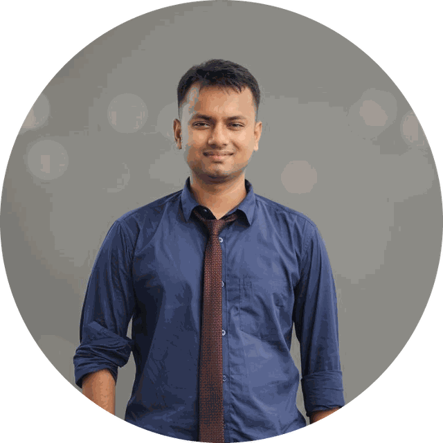

Research
My thesis investigated Surface Plasmon Resonance biosensors — how optical structures can be tuned for sensitive, reliable detection. It involved simulation, parameter sweeps and a lot of careful measurement.
Open to EEE opportunities
Electrical & Electronic Engineer
I graduated in 2026 with a B.Sc. in Electrical & Electronic Engineering from Green University of Bangladesh, where my thesis work was on Surface Plasmon Resonance biosensors. I'm now looking for engineering roles in Bangladesh or remote — in power systems, embedded design, instrumentation or R&D.

01 — About
My degree gave me the fundamentals — circuits, power systems, microprocessors, control. What I did alongside it taught me the rest: how to scope a problem, ship something that works, document it, and keep it running once other people depend on it.
My thesis investigated Surface Plasmon Resonance biosensors — how optical structures can be tuned for sensitive, reliable detection. It involved simulation, parameter sweeps and a lot of careful measurement.
Arduino-based automation, 8086 assembly and microprocessor programming, renewable-energy systems and smart access/security projects — coursework and side projects that ended in working hardware.
Years of volunteer engineering and governance in the Wikimedia movement: tooling used by thousands of contributors, a chapter budget to steward, and a lot of practice explaining technical decisions to non-technical people.
02 — Focus areas
The areas where my coursework, thesis and project work overlap — and where I'd be most useful to a team from day one.
Surface Plasmon Resonance sensing, optical structure design, and the measurement side of turning a physical effect into a usable signal.
Power system fundamentals, distribution, and solar/renewable integration — with an interest in the reliability problems that matter in Bangladesh.
Microcontroller and microprocessor work, sensor interfacing, control logic and the circuit design around it — from breadboard to something that holds up.
Python, C/C++ and Lua. I write tooling that removes repetitive work — bots, data cleanup utilities and small web tools, several of which run in production.
03 — Experience & education
Jan 2026 — Present
Wikimedia Bangladesh
Elected to the executive committee and responsible for the chapter's finances — budgeting, reporting and financial oversight of programmes and grants.
Jun 2023 — Present
Wikimedia Foundation projects
Elected to one of the movement's most trusted technical and governance roles, handling cross-project requests, access management and incident response across Wikimedia's global projects, alongside administration of Bangla Wikipedia.
Sep 2024 — Nov 2024
Wikimedia Bangladesh
Produced communications and documentation for chapter programmes, including newsletter editing and event coverage.
2022 — 2026
Green University of Bangladesh
Thesis: Surface Plasmon Resonance biosensors
2018 — 2020
Shahabuddin Degree College
Physics, Chemistry, Mathematics
04 — Leadership & community
Outside engineering I've spent years in the Wikimedia movement. It's volunteer work, but it has been my best training in the things engineering teams actually run on: shared standards, trust, documentation, and building tools other people rely on without you in the room.
Elected to act across all Wikimedia projects — the movement's highest-trust volunteer role, covering access, policy enforcement and incident response.
Maintenance, moderation and technical upkeep of the Bangla-language encyclopaedia.
Budgets, financial reporting and oversight for the national chapter, as an elected executive committee member.
Leading a programme to grow and connect the Bangla-language contributor community.
Organising contests, workshops and meetups for contributors in and around Dhaka.
Seven-plus published posts on the Wikimedia movement blog, documenting programmes and community work.
MediaWiki templates and Lua modules, maintenance bots and automation scripts that reduce repetitive work for contributors — written, documented and maintained over several years.
Technical writing, newsletter editing, workshop facilitation, public speaking and documentary photography — mostly in service of getting other people started.
05 — Built and running
Things I needed, so I built them. All live on this domain.
06 — Contact
I'm actively looking for Electrical & Electronic Engineering roles — on-site in Bangladesh or remote. If you're hiring, or want to collaborate on something, the fastest way to reach me is email.